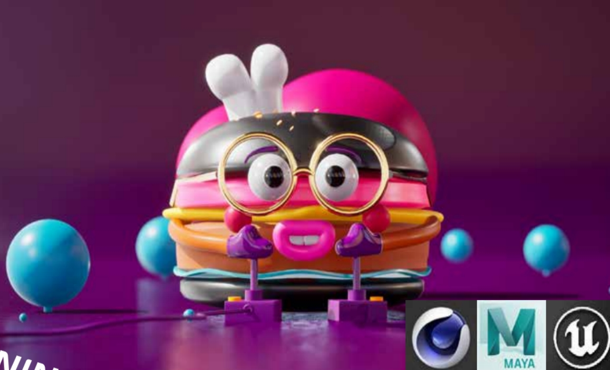
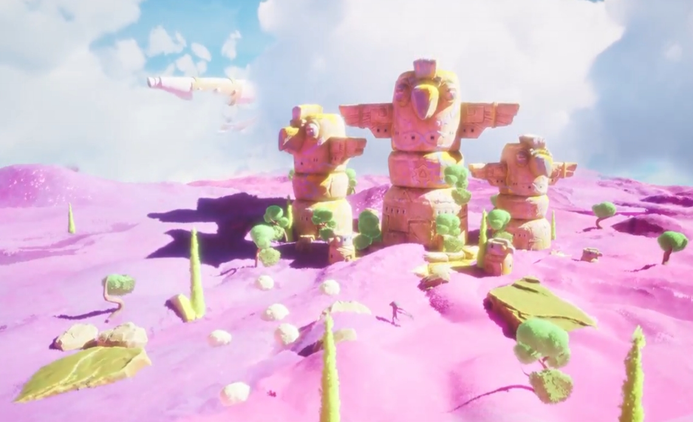
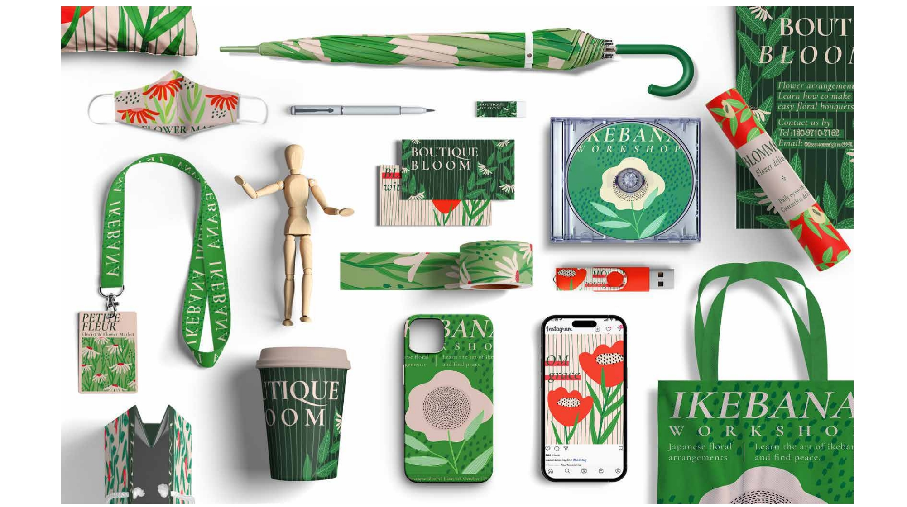

Selected Work

Nanchang City Symbols
A visual identity system designed to introduce Nanchang, China to international audiences through simplified landmark icons and applied print outcomes.

Animation Production Workflow
A production-focused project showing shot tracking, asset organisation, feedback notes and workflow documentation across creative tasks.

Unreal Engine Visual Experiments
Visual experiments exploring space, lighting, material effects and digital presentation using Unreal Engine and 3D workflows.

Poster & Layout Design
A selection of poster, print and layout studies focused on hierarchy, visual rhythm and communication across different formats.
About
I am a Visual Communication student at the University for the Creative Arts. My work focuses on building clear visual systems, organising creative processes and communicating ideas across print, digital and spatial formats.
I am currently seeking internships in branding, visual communication, design assistance and production coordination.